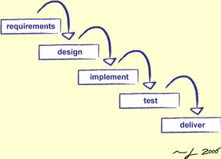
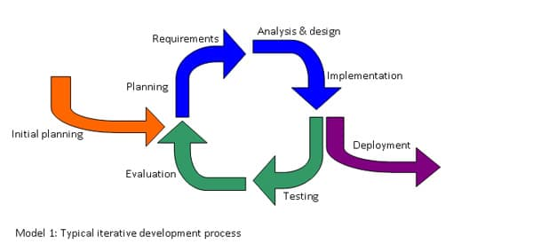
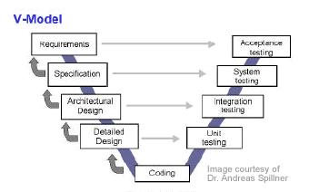
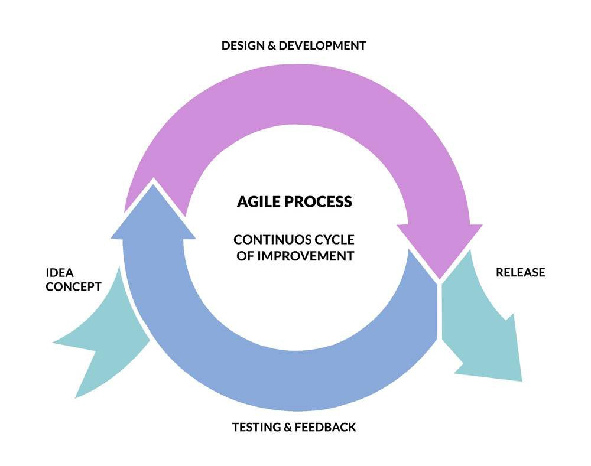

The waterfall model is a sequential design process in which progress is seen as flowing steadily downwards (like a waterfall) through the phases of Conception, Initiation, Analysis, Design, Construction, Testing, Production/Implementation and Maintenance.The waterfall development model originated in the manufacturing and construction industries; where the highly structured physical environments meant that design changes became prohibitively expensive much sooner in the development process. When first adopted for software development, there were no recognised alternatives for knowledge-based creative work.
It is a particular implementation of a software development life cycle that focuses on an initial, simplified implementation, which then progressively gains more complexity and a broader feature set until the final system is complete. In short, iterative development is a way of breaking down the software development of a large application into smaller pieces.The model of the iterative model life cycle that did not begin with whole stipulations. Particularly in the model, the development starts by designating and executing the only component of the software that is when analyzed in accordance to recognize later specifications. Furthermore, in the model of iterative, the process of iterative begins with a simplistic execution of a little collection of the software requisite, which iteratively improves the developing variants until the whole system is executed and prepared to be redistributed. Every Iterative model release is developed in a particular and established period of time known as iteration.
The V-model is an SDLC model where execution of processes happens in a sequential manner in a V-shape. It is also known as Verification and Validation model. The V-Model is an extension of the waterfall model and is based on the association of a testing phase for each corresponding development stage. This means that for every single phase in the development cycle, there is a directly associated testing phase. This is a highly-disciplined model and the next phase starts only after completion of the previous phase.
Agile modeling (AM) is a methodology for modeling and documenting software systems based on best practices. It is a collection of values and principles, that can be applied on an (agile) software development project. This methodology is more flexible than traditional modeling methods, making it a better fit in a fast changing environment. It is part of the agile software development tool kit. Agile modeling is a supplement to other agile development methodologies such as Scrum, extreme programming (XP), and Rational Unified Process (RUP). It is explicitly included as part of the disciplined agile delivery (DAD) framework. As per 2011 stats, agile modeling accounted for 1% of all agile software development.
